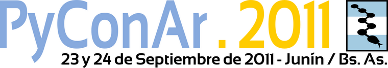

Razones para ir a PyConAr 2011
PyConAr es la conferencia de Python en habla hispana más grande del mundo y la edición 2011 se va a llevar a cabo en Junín, Buenos Aires, el próximo viernes y sábado. Vas?
Para convencerse a ir, además de mirar en el sitio oficial el listado de charlas (que incluye 5 speakers internacionales) y el mapa donde se ve de todos los lugares que vamos, no dejes de pasar por el blog oficial de la organización: en especial los posts en los que cada verso del Zen de Python.
En este detalle se refleja todo lo que han trabajado para organizar este evento. No dudo que va a estar muy bueno.
Comentarios
Comments powered by Disqus